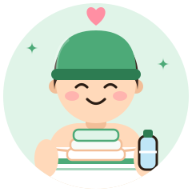
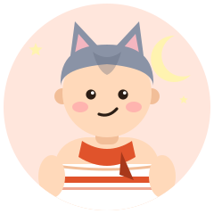

- S低温じっくり
- A外気浴派
- Tみんなでサウナ
- R計画・ルーティン
サウナのお世話係
The Caretaker
みんなが気持ちよく過ごせるよう、さりげなく整える
ゆるく穏やかに寄り添う
ほっこり隊タイプタオルを用意したり、水分補給を促したり。仲間のコンディションにも気を配る、みんなの安心役です。
強み
- 気遣い
- 計画性
- チームのバランサー
気をつけたいこと
- 自分のケアも後回しにしないで
相性のいいタイプ

気まぐれに現れ、熱と冷水を総なめにする孤高の人
一匹狼の気まぐれが、いつもの段取りに新鮮な風を入れてくれる。予定どおりにいかない時間が、思い出になる。
おすすめのサウナ
家族・グループで使いやすい施設
- 島原温泉 ホテル南風楼 長崎県 島原市 ホテル・カプセル
海にせり出すととのいテラス海を望むセルフロウリュのサウナと、ひとり用の水風呂が3つ。有明海を一望できる外気浴 公式サイト地図で見る - スパ ラクーア 東京都 後楽園 スパ・健康ランド
都心の天然温泉つき大型スパ男女で利用できる。年齢の利用条件は公式情報で確認を 公式サイト地図で見る - みはらしの湯 長野県 温泉
南アルプスを望む絶景の温泉外気浴スペースからの眺めが評判 地図で見る
※ 営業状況・料金・利用条件は変わることがあります。訪問前に公式情報をご確認ください。
あなたのタイプは？
サウナのお世話係は、サウナの好みで分かれる16タイプのひとつです。質問に答えるだけで、あなたの「ととのい方」がわかります（無料・登録不要・約3分）。
ほかのタイプ
※ 娯楽目的の診断です。サウナは体調に合わせて無理せず、水分補給をしてお楽しみください。